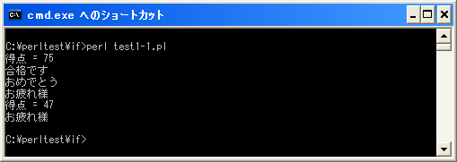

if文
プログラムは記述した順に実行されていきます。ただある条件によって処理を分けたい場合もあります。例えば変数の値が正の数ならこちらの処理を行い負の数ならこちらの処理を行うといった場合です。
このように条件に従って処理を分岐させるための使われるのが「if」文です。「if」文の書式は次のようになっています。
if (条件式){
条件式が真の時に実行する処理1;
条件式が真の時に実行する処理2;
}
条件式の箇所には「x == 10」や「y > 15」など関係演算子を使った条件式を記述します。この条件が真(true)となる時に「{」から「}」までの文が実行されます。(関係演算子については次のページを参照して下さい)。例えば「変数に格納されている値が正の数なら」とか「変数に格納されている文字列が"国語"と等しかったら」などです。
なお「{」から「}」で囲まれた部分をブロックと呼びます。if文の場合には条件式が真の場合にブロック内に記述された文を実行するということになります。ブロックはプログラムの中である範囲を区分するために使われます。
他のプログラムミング言語では、実行される文が1つの場合はブロック無しで記述できる言語もありますが、Perlでは必ず「{」と「}」で囲ってブロックを記述する必要があります。
実際のプログラム例としては次のようになります。
my $seiseki;
$seiseki = 75;
if ($seiseki > 60){
print "合格です¥n";
print "おめでとう¥n";
}
print "以上です";
今回の例では条件式として変数「$seiseki」に格納されている値が60よりも大きいかどうかを設定しています。条件式が真となるとき、つまり変数の値が60よりも大きい場合に「{」から「}」で囲まれたブロック内の「print "合格です¥n";」が実行され、次に「print "おめでとう¥n";」が実行されます。そしてブロックが終わった後の「print "以上です";」が実行されます。
もしも変数に格納されている値が60以下の場合にはブロック内の処理は行われずに、ブロックの後に記述された「print "以上です";」が実行されます。
ブロック
if文でブロックを記述する時には次のように記述しても構いません。
my $seiseki;
$seiseki = 75;
if ($seiseki > 60)
{
print "合格です¥n";
print "おめでとう¥n";
}
ブロックの「{」の位置が先ほどのサンプルとは異なっています。これはどちらでも構いません。
なお「if」文の次の行の先頭がインデント(字下げ)されています。これは「if」文の結果によって実行される箇所であるというのを分かりやすくするための慣習として行われていますがインデントは必須ではありません。ただ次のようにインデントしないで記述するとどの行が条件によって実行される行なのか分かりにくくなります。
my $seiseki;
$seiseki = 75;
if ($seiseki > 60){
print "合格です¥n";
print "おめでとう¥n";
}
サンプルプログラム
では簡単なプログラムで確認して見ます。
use strict;
use warnings;
use utf8;
binmode STDIN, ':encoding(cp932)';
binmode STDOUT, ':encoding(cp932)';
binmode STDERR, ':encoding(cp932)';
my $seiseki;
$seiseki = 75;
print "得点 = $seiseki¥n";
if ($seiseki > 60){
print "合格です¥n";
print "おめでとう¥n";
}
print "お疲れ様¥n";
$seiseki = 47;
print "得点 = $seiseki¥n";
if ($seiseki > 60){
print "合格です¥n";
print "おめでとう¥n";
}
print "お疲れ様¥n";
上記を「test1-1.pl」の名前で保存します(文字コードはUTF-8です)。そしてコマンドプロンプトを起動し、プログラムを保存したディレクトリに移動してから次のように実行して下さい。

今回は変数に格納した値を変えて、同じ処理を2回繰り返しています。1回目は条件式が真となるためブロック内が実行されますが、2回目は条件式が偽となるためブロック内は実行されません。
( Written by Tatsuo Ikura )

著者 / TATSUO IKURA
初心者～中級者の方を対象としたプログラミング方法や開発環境の構築の解説を行うサイトの運営を行っています。